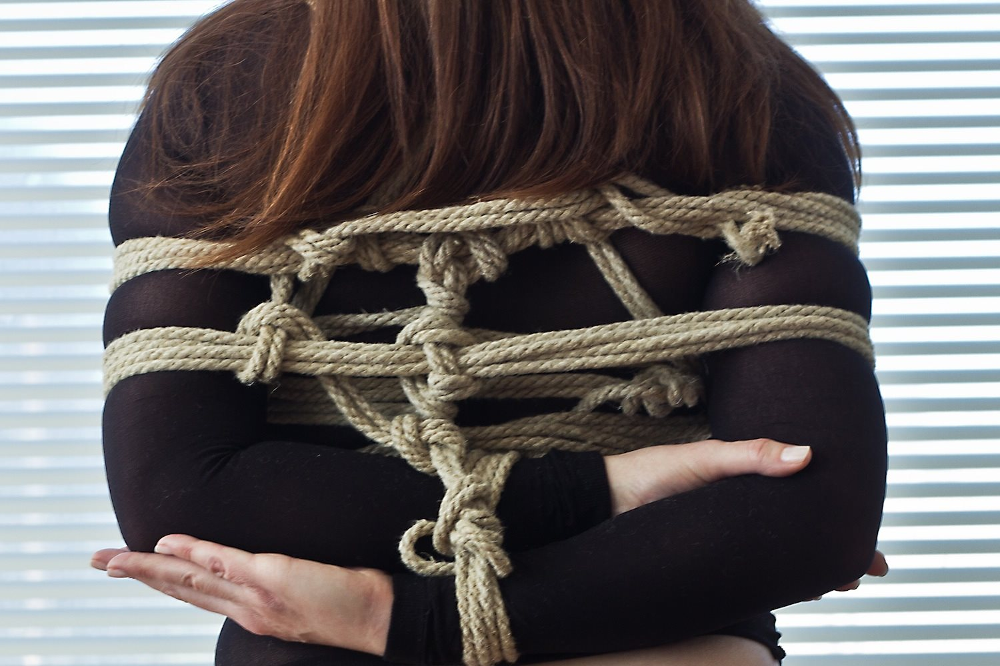

Chapter 3
Oh my God, I can’t believe it took me so long to get here! Damn traffic. And I left work early even though I’m behind on that project, and my boss is going to chew me out, and I hate my job anyway—I should just quit and start a jewelry-making business, so no one can tell me what to do ever again. Jewelry…ugh, why did I wear this necklace my ex gave me? Now I’ll be reminded of him all night. I should post a photo of this scene on FetLife tomorrow so he can see just how much fun I’m having without him and eat his emotionally devoid heart out…
Sound familiar? The exact words running through your head will differ, but most of us have a constantly running internal dialogue that mixes thoughts of the past, present, and future. And that mental chatter keeps us from focusing fully on the here and now.
Mindfulness is Helpful Skill No. 1 for a reason: It affects every aspect of the scene. It is being conscious, being aware, being focused on what is happening in the present moment. It is tuning out the person who cut the line at the grocery store, the fight you had with your kid, work deadlines, your vacation two months from now.
Holding on to things that happened in the past or worrying about things that will happen in the future will not serve you in your present rope scene. It will also divert your attention away from potentially dangerous issues that may arise. Let everything past and future go so you can “drop in”—be present—as fully as possible.
Part of the beauty of rope, for me anyway, is that it’s an escape from the everyday. A rope scene can be glorious, passionate, even transcendent—but not if half your mind is somewhere else. You have chosen to be here, with this person and in this scene. Make the most of it.
So how do you cultivate mindfulness while preparing for a rope scene? If, like me, you lack the meditation skills of a Zen master, don’t despair. In fact, many people like tying or being tied up because it actually puts them in a meditative state. But beginning the scene with at least some mindfulness will help you get to that meditative state more easily.
Sit in a comfortable position, close your eyes, and breathe deeply. Focus on your breath and how it feels in your body. Follow it as it makes your abdomen and chest rise and fall. Focusing on the physical will take you out of your head and away from the mental chatter.
Eye gaze with your partner. Face each other silently and look deeply and openly into each other’s eyes. Doing this for even just 2 minutes can be very grounding—and also very connective. If you have never tried eye gazing before, it might feel strange at first. Don’t give up! Just acknowledge the weirdness silently to yourself and keep gazing. It can help to pick one eye to focus on and stick with it the whole time.
Breathe with your partner. Sit in front of your partner, facing away or toward each other, with their arms wrapped around you, and breathe together. You can either inhale and exhale at the same time or “feed” each other’s breaths by one of you inhaling as the other exhales, whichever feels more grounding. Breathing together in this way will also help foster a sense of connection.
Practice auditory meditation. If I’m in a noisy place and can’t tune out all the sounds, I go the opposite route: I close my eyes and take them all in, focusing only on sounds for a few minutes. Try not to identify each sound for what it is; just hear them all and let them float away. Eventually they’ll lose their meaning and impact; they’ll all blend into an innocuous wave that will ebb back into the sea.
Stretch. Not only will stretching loosen you up, but focusing on the physical will take your mind off the mental. You don’t have to do full-on yoga or even sit on the floor; you can do standing stretches like side bends, quad stretches standing on one foot, calf stretches leaning your hands against a wall, and hamstring stretches by reaching for your toes.
~
During a scene, mindfulness may take a different form. You might focus on the sensation of the rope on your skin or the way it compresses your body. (One of my favorite sensations is the vibration created when a rope is dragged across another rope, creating a pitch in my body like a tuning fork. Yum!) You might focus on your partner’s touch or breath. You might focus on your own breathing or on dealing with the intensity, in whatever shape it comes in—maybe it’s pain; maybe it’s pleasure. But whatever is going on, staying mindful will help you make the most of the experience.
Staying mindful can be particularly difficult when you’re in a noisy club, when your friends are watching, when you’re in a dungeon with people screaming or shouting, and so on. Just remember that if you are focusing on the sensations of the rope, the connection with your partner, your breathing, etc., you are not focusing on all those other things.
If you ultimately let go completely in your rope scene and float off into sub space, rah for you! Sub space, however, brings us to another warning and some talk about nerve damage.
Warning: Whether in sub space or not, periodically check in with your body for danger signs, such as pain, tingling, numbness, and/or itchiness.
A conscientious, experienced, and trustworthy rope top will prompt you to check in, asking you to press against their hand or make a thumbs-up sign, or they’ll do other bodily checks to make sure no nerves are being compressed or otherwise compromised. If you trust your partner completely to do this on your behalf, far be it from me to tell you not to go ahead and float off to another plane of existence.
Personally, I can’t imagine trusting anyone that much that I would risk injury. Nerve damage can happen in less time than you may think—even in a matter of seconds.
Also, not only is your rope top trying to focus on many things aside from bodily checks, but there’s no way for them to know what’s going on inside your body unless you tell them—even with motor tests! There are so many things that someone on the outside can’t see or check for, like tingling and nausea; only you can feel them and communicate that they’re happening. And even if your partner could check for all possible issues, they’d have to check so frequently that they wouldn’t be able to do anything else. Take responsibility for your body and your safety, and stay aware of potential issues.
I let myself float away but always keep one part of my consciousness on my body and come back to check in with it regularly. (Yes, it’s really hard sometimes!) My check-ins involve wiggling my fingers, rotating my wrists, moving my feet, etc. Is anything tingling, numb, or excessively painful? Does anything feel weird in a way I can’t quite describe?
If at any time you feel tingling, numbness, or weirdness, tell your rope top immediately.
Don’t try to guess whether tingling or numbness is a circulation problem or a nerve issue, because even if it’s “just” a circulation issue that will resolve itself shortly after the ropes are removed without leaving any permanent damage, numbness can mask the feeling that tells you nerve damage is happening. Tell your rope top. You can always get tied again later—unless you’re injured because you didn’t address a nerve issue when it was happening.
Nerve damage takes different forms, from mild to severe. In suspensions, the most commonly reported nerve injuries seem to happen from compression of the ulnar or radial nerves in the arm, often from an upper-body tie that’s usually (and, according to some people, mistakenly) called a takate-kote (TK), or box tie. But, of course, nerves run throughout the whole body, not just the arms.
As I’m not a medical professional, I’m not going to discuss nerve damage in great detail. But as a rope bottom, I can tell you that it really helps to learn your own body, including where the nerves are located in your arms and legs, because every single body is different. If you can tell your rope top which areas not to lay rope on because that’s where a nerve is, you’ll increase your chances of coming out uninjured.
The photo below shows one version of a takate-kote. If this had been for suspension; I wouldn’t have locked that left thumb on the right elbow, because locking the thumb makes it harder to switch arm positions in the air. (Ropework and photo by The_Silence.)

But, wait! you say. Why all this fuss about nerve damage? What’s a little loss of sensation or wrist drop…my body will heal eventually, right? For one thing, maybe the injured area will heal completely; maybe it won’t. There’s no way to tell. For another thing, even if it heals, the injured part may be more susceptible to being reinjured in the future. And for a third thing, consider what you do on a daily basis. If your job, for example, involves typing on a computer all day, what are you going to do if you get wrist drop and can’t type for 2 weeks or even 6 months? Will you lose income or even your job? What if you couldn’t drive your car because you can’t maneuver the stick shift or even just the wheel? I can’t emphasize enough that you must be aware of the risks and choose the level of risk that is acceptable to you.
If you’d like to learn more about nerve damage—how to avoid it, first-aid treatments, other people’s recovery times—read through the archives on FetLife’s many rope groups, such as Riggers and Rope Sluts, Rope Incident Reports, and Ask a rope bunny. RemedialRopes.com has an excellent section on nerve damage. Esinem, a widely respected rigger and instructor, has studied nerve damage and published his findings on his website, Esinem.com. WykD Dave, another widely respected rigger and instructor (who has tied the likes of Lady Gaga), has written about it on his website, Rope-Topia.com, as well.
You’ll find plenty of information if you search, but use your own judgment even when considering info from medical professionals. There’s a lot of helpful stuff; there’s also a lot of incomplete, contradicting, and downright incorrect info out there, especially in Internet land.
And if you do ever get injured, it’s of course recommended to see a doctor and to be honest about how the injury happened. There are plenty of kink-friendly doctors, at least here in the U.S.; check out the Kink Aware Professionals Directory on the National Coalition for Sexual Freedom’s website (www.ncsfreedom.org).
Emotional support is important too, because injuries have a way of making us blame ourselves and feel bad even when there were many factors at play. Consider posting on the Rope Incident Reports section on FetLife and talk with other rope bottoms and tops—you’ll likely gain a much healthier and broader perspective on your injury than if you just keep it to yourself and feel ashamed.
OK, back to being in the rope. I recommend that you don’t look at the rope while you’re being tied, because 1. You may accidentally get whipped in the face or even in the eye by the rope, and 2. It’s harder to surrender when you’re watching every little thing that’s happening.
Once a scene is complete, mindfulness for me takes a different form: consideration. Am I getting the aftercare I need? Am I giving my rope top the aftercare they need?
Regardless of what I’ve negotiated, I check in with myself to see if I’m getting the aftercare that will make me feel like the scene is complete, that I’m nourished and cherished. Sometimes you might need extra aftercare from your rope top than you anticipated—it’s OK to ask for more than you negotiated for! But realize that your rope top may not be able to provide it or may not be fulfilling your needs even if they’re doing what you did negotiate. So sometimes aftercare takes an unexpected form. Sometimes you may want to ask someone other than your rope partner to provide aftercare; sometimes you may want to do self-care (we’ll get to that more in Chapter 8).
Or sometimes you may even need less aftercare than you negotiated, and that’s OK too. Maybe you just want a quick hug and you’re done—nothing wrong with that as long as you’re not short-changing your rope top. Only you know the amount of aftercare you need in that moment.
Not every scene and aftercare will go as you’ve negotiated, but being mindful of your needs at this stage will go a long way toward making you feel fulfilled in the scene and mitigating any sub drop in the days ahead.
Please remember that your rope top has needs too! And that tops are not always so easily able to ask for aftercare. I often ask after a scene, regardless of whether we’ve negotiated top aftercare, “Is there anything I can do for you?” Once you’re back in the real world and can walk without falling over, try offering your rope top some water or something from the food table if you’re in a club with snacks. Other potential offerings include wiping their neck or head with a cloth towel or with paper towels from the restroom—isn’t that sweat they built up making magic for you sexy?—or a neck rub or backrub or even something sexual or whatever else you feel comfortable with. You don’t have to be a professional massage therapist to gently and affectionately knead or even just stroke a neck, a back or feet.
In all the times I’ve offered to fetch a snack, provide a neck rub, or just snuggle, regardless of what was negotiated, no top has ever said no to some kind of caring attention.
Afterward, even if your top refuses any aftercare at all, please remember to always thank them. They worked just as hard and likely spent even more time than you did learning the skills to make the scene happen. If your scene went horribly wrong because your top was a total ass and didn’t listen to your communication or whatnot, you can skip the appreciation and offer constructive feedback. If there were things that went well and things that didn’t, express appreciation for what worked and make a mental note to offer other feedback when it feels appropriate.
Bonus: Happy, fulfilled, appreciated rope tops are more likely to want to tie you up again. Call it a win-win.